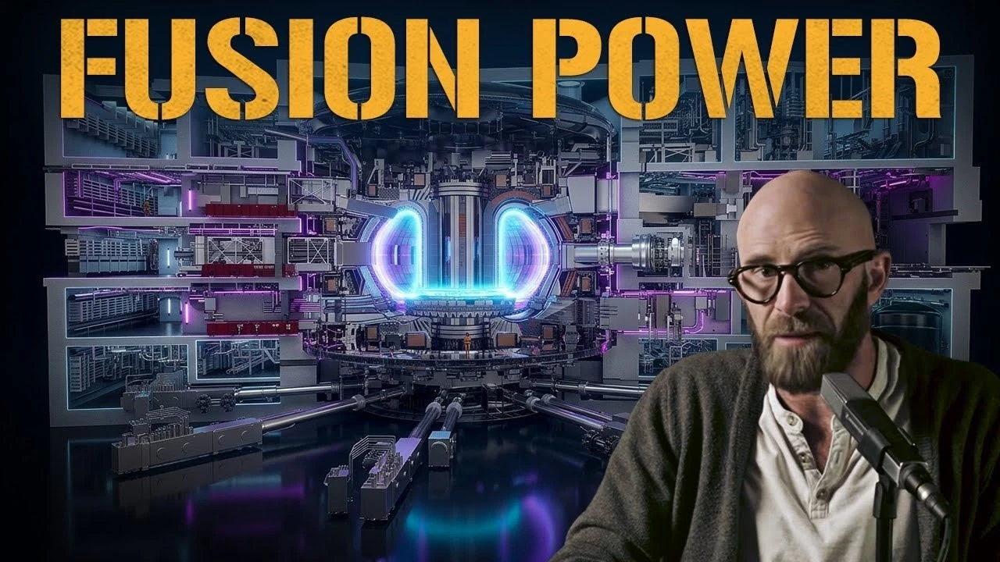
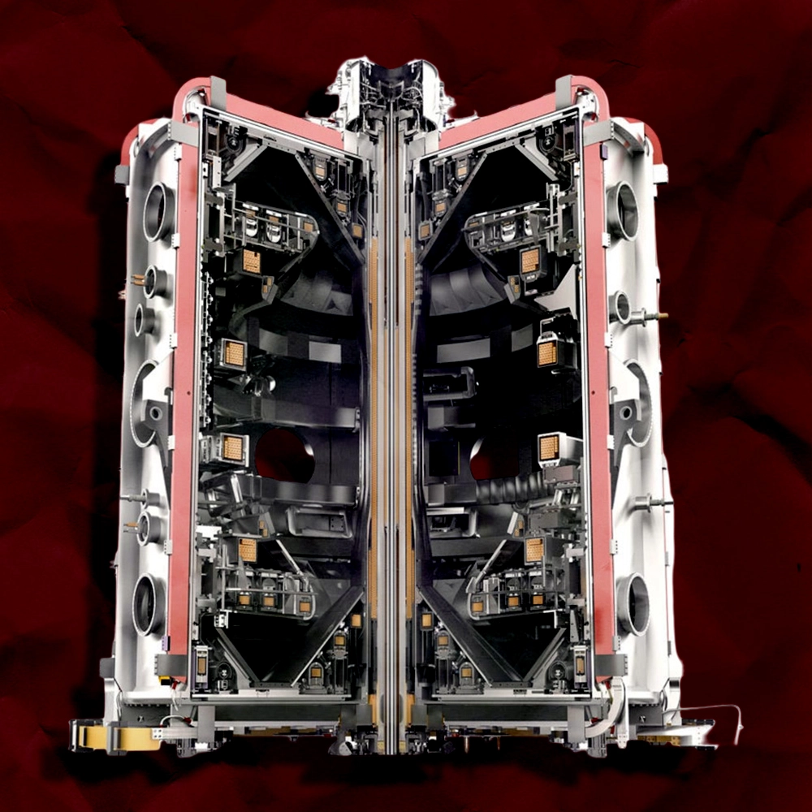
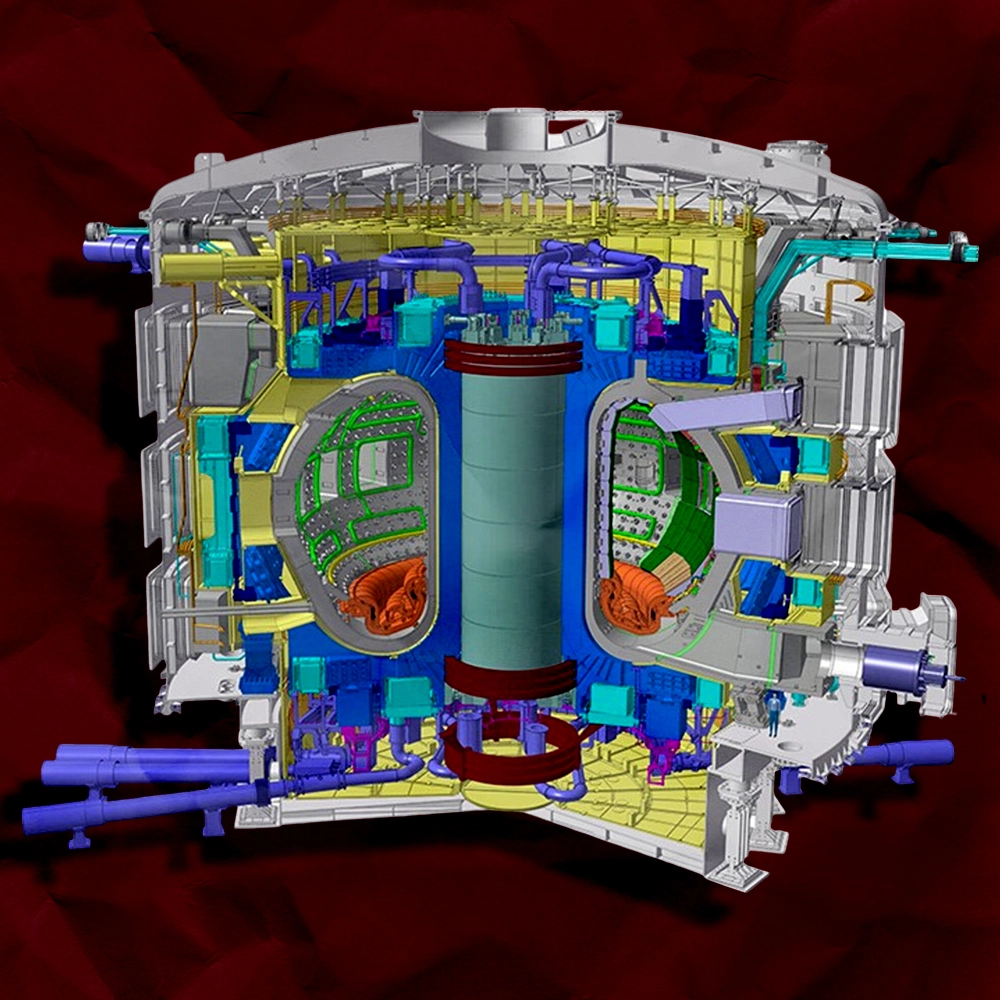
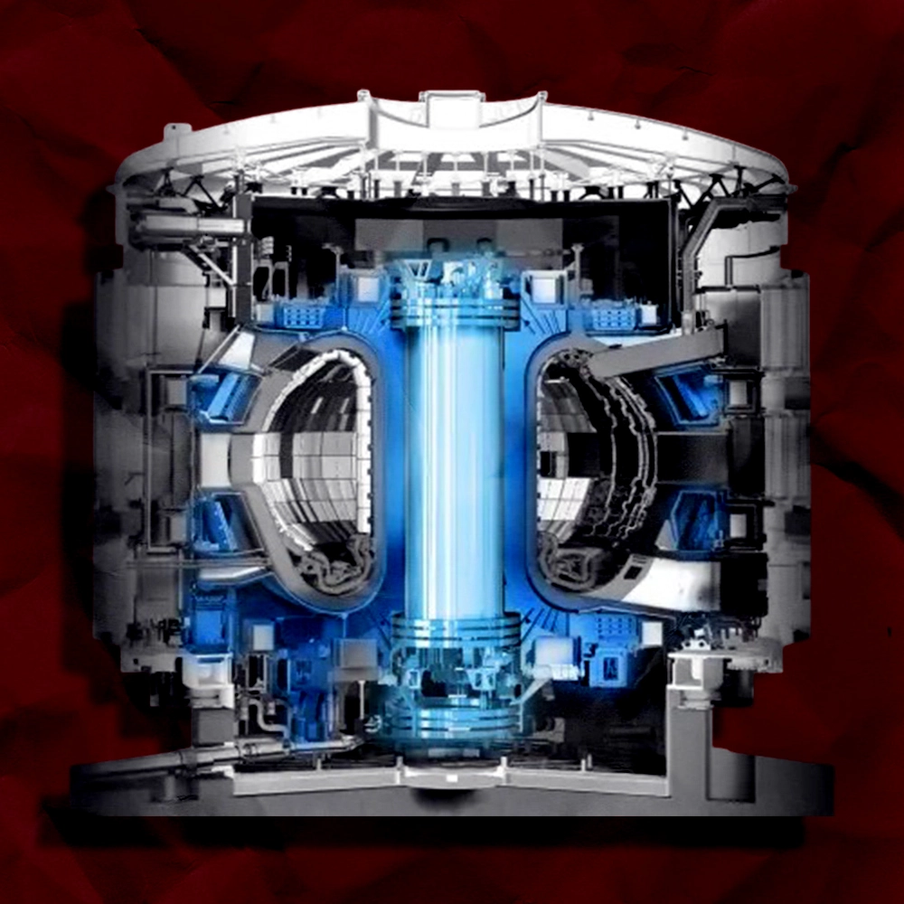

1: QUICK LOOK AT THE VIDEO
Niche:
Science and technology
Description:
The video breaks down the heavy engineering behind the ITER Tokamak, explaining how the machine works and how we even build something this complex.
Aim of Video:
The creator wants a bit more general audience on his channel rather than people who are completely into tech related topics
2: The Goal
Objective:
Because the video is about a deeply complex and technical machine, it is really easy to fall into the trap of making the thumbnail overly complicated and full of technical details. The objective here was to take a massive topic and simplify it into something clean and understandable for a general audience. It needed to be visually striking enough to make someone stop scrolling on their homepage, without boring them with hundreds of technical details they won't understand at first glance.
So the main objective is to hit the right balance of complexity of the topic while maintaining visual clarity of thumbnail.
3: Let's see what's working in this niche

When looking at other thumbnails in this space, the most clear pattern is that almost all of them show massive complexity rather than keeping things clear. This might attract more tech enthusiasts but for attracting a general audience, clarity needs to outperform complexity. For inspiration, thumbnails with more negative space (clarity) were far more better choice like this one:
4: Let's Build the Thumbnail
Supporting Assets (Background & Text):
While the background and text play their part, they were kept simple on purpose, to ensure maximum clarity. The background is a simple dark gradient to make the main object image and the text pop more, and the text uses a very common font "Montserrat" to avoid adding extra visual clutter.
The Core Asset (Tokamak Machine):
The main machine image is the star of the show because, compared to other reference images that look way too cluttered, this specific image is simple enough to at least not look that complicated while still being good enough to grab attention. Here's a better comparison to explain what im trying to say:




5. Final look
Heres what the final thumbnail looks like: